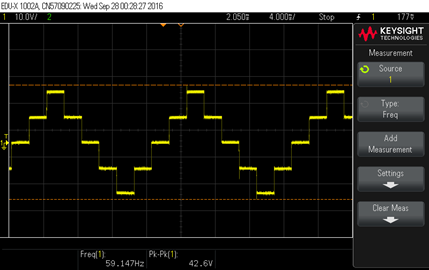
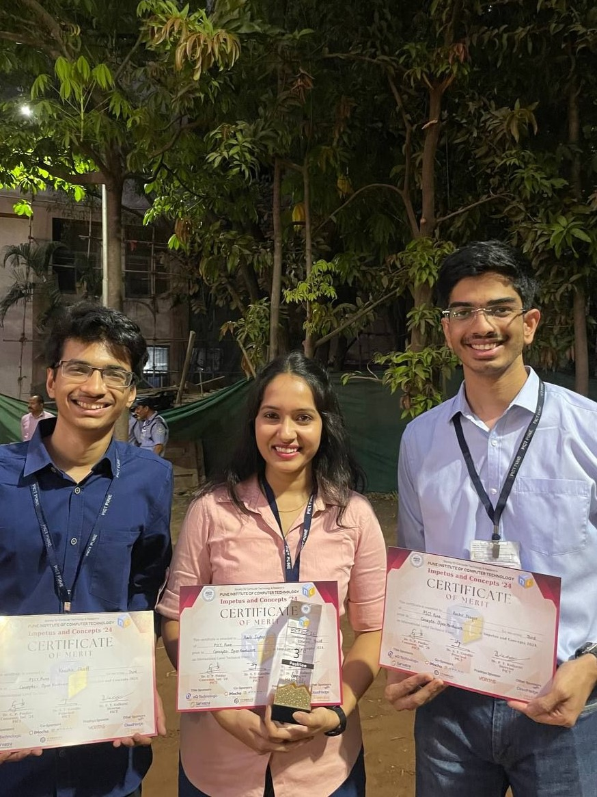
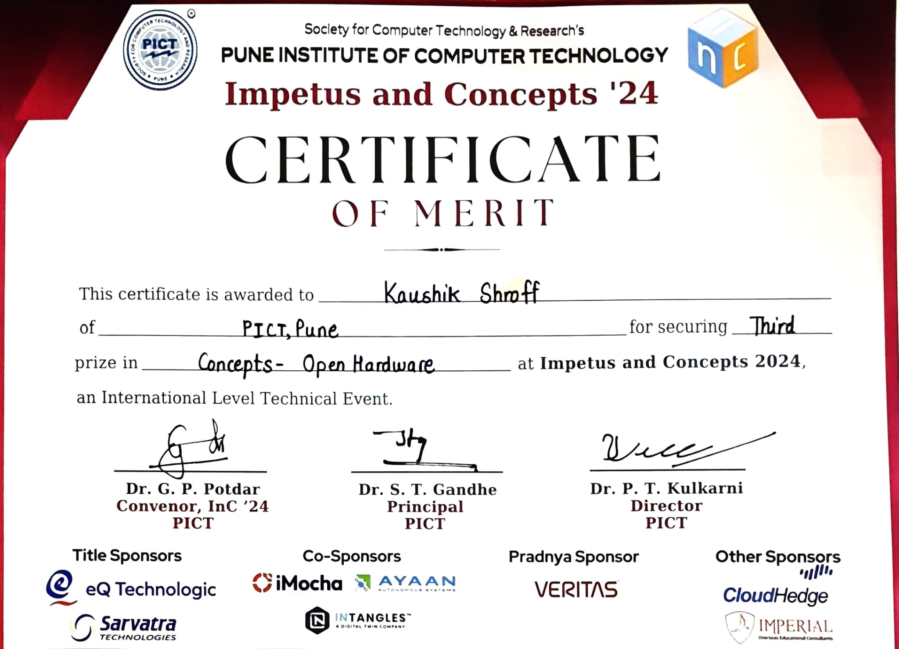
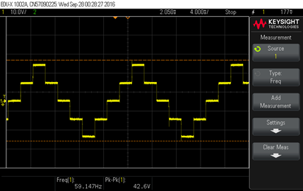
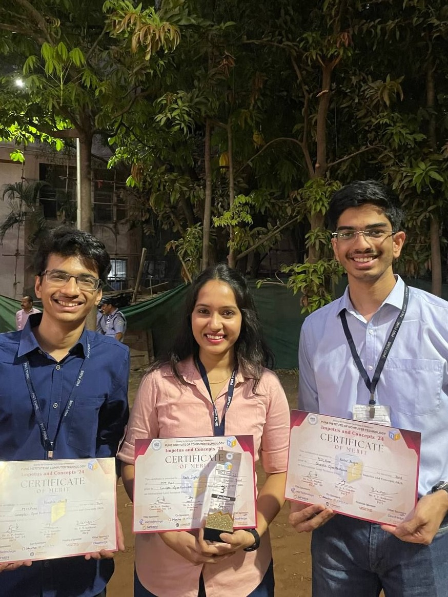
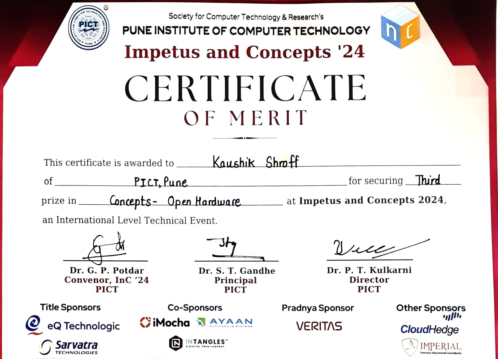

Project Overview: This project focused on the design, implementation, and performance analysis of a 5-level Cascaded H-Bridge (CHB) multilevel inverter, a power conversion system that enhances AC waveform quality while reducing harmonic distortion. The system was built using an ATMega328 microcontroller for precise switching control, MOSFET-based H-Bridge cells, and a multi-stage power regulation setup.
A key aspect of the project was the evaluation of Total Harmonic Distortion (THD) under different load conditions, helping to quantify the system’s efficiency. The system was tested with R, RL, and RLC loads, revealing THD values of 26.37% (RL load) and 22.81% (RLC load)—showing a significant improvement over conventional inverters.
The project serves as a valuable educational tool for power electronics, offering insights into multilevel inverter performance, waveform optimization, and power electronics design. Future improvements aim to reduce THD further, integrate closed-loop feedback control, and implement active power factor correction for enhanced efficiency.
Key Takeaways:
- 5-level CHB multilevel inverter successfully implemented with stepped voltage levels of 0V, ±V, ±2V.
- THD measured at 26.37% (RL load) and 22.81% (RLC load), demonstrating waveform quality improvements.
- Utilized 8 MOSFET switches (IRF540N) and 2 cascaded H-Bridge cells for multilevel voltage synthesis.
- ATMega328 microcontroller-based control system designed for precise switching with optimized pulse generation.
- Tested across multiple load types (R, RL, RLC), validating system adaptability and performance.
- Identified areas for improvement: further THD reduction, closed-loop feedback control, and power factor correction integration.